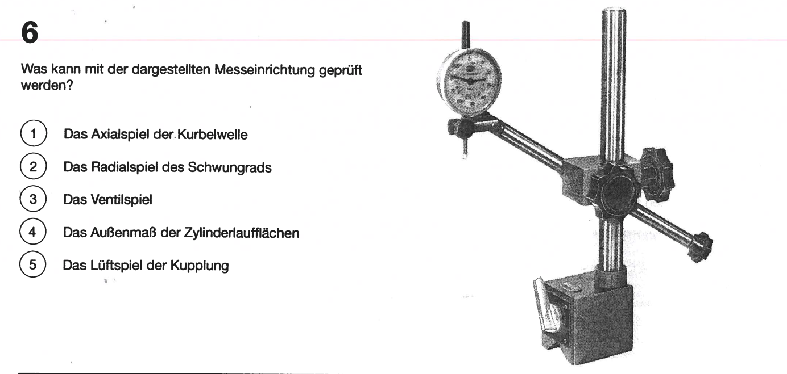

Antwort auf die Frage: Was kann mit der dargestellten Messeinrichtung geprüft werden?

Das dargestellte Messgerät ist ein Indikator (Messuhr), das hauptsächlich verwendet wird, um sehr kleine Abweichungen und Spielräume zu messen. Es besteht aus einem langen Ständer, einer Uhr und einem Messstab, der direkt auf die zu prüfende Oberfläche aufgebracht wird. Diese Art von Messgerät ist präzise und wird häufig in der Maschinenbauindustrie verwendet.
Nun, lassen Sie uns die Antworten durchgehen:
- 1. Das Axialspiel der Kurbelwelle: Diese Antwort ist korrekt. Das Axialspiel bezieht sich auf die Bewegung der Kurbelwelle entlang der Achse. Der Messindikator kann diese Bewegung sehr genau messen, indem er auf die Welle gedrückt wird, während diese sich bewegt.
- 2. Das Radialspiel des Schwungrads: Diese Antwort ist ebenfalls relevant für das Messgerät, aber es ist nicht die primäre Funktion des Indikators. Das Radialspiel bezieht sich auf die seitliche Bewegung eines Objekts, was auch mit diesem Gerät gemessen werden könnte, aber es ist nicht der hauptsächliche Verwendungszweck des Messgeräts.
- 3. Das Ventilspiel: Ein ähnliches Prinzip wie das Radialspiel, jedoch ist das Messgerät nicht direkt dafür ausgelegt, das Ventilspiel zu messen. Es könnte eine Rolle spielen, aber nicht in erster Linie.
- 4. Das Außenmaß der Zylinderlaufflächen: Das Messgerät kann auch verwendet werden, um diese Maße zu überprüfen, indem man den Messstab entlang der Fläche bewegt. Aber wie das Axialspiel ist dies nur eine sekundäre Anwendung dieses Messgeräts.
- 5. Das Lüftspiel der Kupplung: Diese Art von Spiel würde normalerweise ein anderes Messgerät erfordern, das speziell für diese Art von Messung konzipiert ist. Daher ist diese Option nicht korrekt.
Zusammenfassend lässt sich sagen, dass die richtige Antwort auf diese Frage 1. Das Axialspiel der Kurbelwelle ist, da das dargestellte Messgerät sehr gut dazu geeignet ist, Axialbewegungen präzise zu messen.